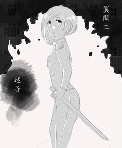

「人類會經歷兩次死亡，一次在爾等呼息停止之時。」
——而第二次……

熾熱的日光，樹葉婆娑，攪得地面上的光影斑駁。
然而在廢棄神社內卻幽朦陰暗，只有天頂的縫隙有日光撒入。
鈴緒禁不起時光的嚙咬，綻開了紅色白色的繩線，六角木柱遭受嚴重的蟲蝕，搖搖欲墜地垂掛在上頭。
不知怎麼的，很犯睏啊。
她使力搧動眼皮，想眨去水氣以湮滅自己呵欠不斷的證據。
好想睡。
與生理訊息打架的，是不停抽絲剝繭、試圖分析所擁有線索的綿長思緒。
……
——山腳下的村莊。
——在深山裡失蹤的孩子們。
——天狗作祟的傳聞。
以及……
指尖因磨過老朽的賽錢箱而沾滿塵屑，色澤斑駁的表面在自己的摧殘下又剝落了幾塊，上頭的封蓋被放置在一旁。
在賽錢箱內，一具枯瘦的白骨印入眼中，被黯淡的紅色與木色包圍。
蜷伏著、安靜恍若睡著一般的姿態。
手骨環過膝蓋，小小的，細細的，似乎是孩子的骨架。
為什麼在這裡？和失蹤孩子們的關係是什麼？
閃過腦海的疑問迫使她保持清醒，如果可以，她真想直接避開這種無可遏止的聯想。
白骨十分完整，像是被誰好好善待著一樣，唯獨左腳踝處有著明顯的裂痕，那傷口之深，不難想像當初有多疼痛。
然而，據那老婦人所說的，孩子們是在幾天前失蹤的。在這短短的時間內變成如此乾淨的枯骨，與事實並不相符。
連日的綿綿細雨讓空氣中充斥了除了霉味以外清新的雨水氣息。
「總之，先和那邊回報吧。」收回落在賽錢箱中的視線，千蒔轉身走出神社，打算先和分頭探索的夥伴會合。
——吶。
叮鈴。
才踏出神社，兩道聲音近乎是一起響起。稚嫩的嗓音，以及水洗似的鈴聲。
「為什麼，你看不到我呢？」
╳× ×× ×╳
坐落在神岳山腳下，有座小小的村子。
在很綠很綠色的山上，村中的孩子們摘果子、唱歌。
孩子一多，玩起來誰也不分彼此，我們很快就熟悉了起來。
在春天，我們一起唱歌、捕魚。
接著，迎來了熾熱、陽光充足的夏日，和果實累累的秋季。
我們曾經很好的。
我們不是一起吃果子，玩耍，抓蟲子嗎？
曾經應該很要好、很要好的啊。
為什麼，都看不見我了呢。
為什麼、為什麼呢？
……好寂寞、好寂寞呀。
「為 什麼呢 ？」
如在薄冰上敲下的冰柱，眼前的景色乍然迸裂，如蜘蛛網般的紋路延伸至天際。
如老舊播放機傳出來的噪音雜訊，震的耳膜轟轟作響。
破碎的畫面狠戾地包圍她，眼前的畫面像是被人猛烈拉出的底片卷，飛快變換著。
在這暴風的中心她幾乎難以睜眼，廣大的資訊量毫不客氣地撞擊她，令她難以穩住腳步。
慌亂中，她只能捕捉到一幕幕閃過的殘影。
而後，黑色的眸子倏地瞠大。
她開口，極欲想向風暴中心那蜷縮著身子的模糊影子問話。
「等等、你是——」她伸長了手，試圖抓住什麼。
察覺到她的意圖般，所有畫面忽然猛朝她撲了過來，吞噬了所有聲音。